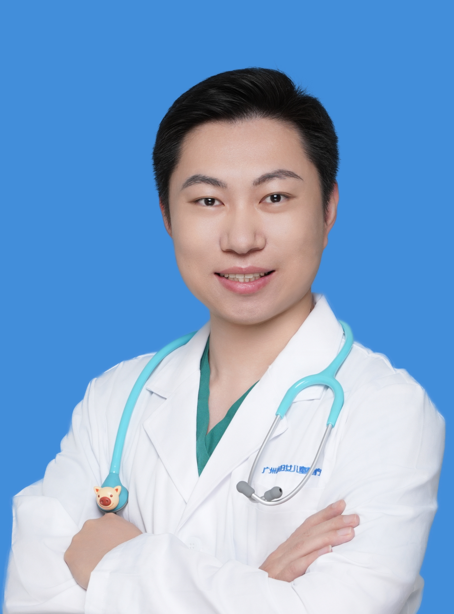

杨洋
主治医师 · Attending Physician
Attending Physician · PICU
广州医科大学附属妇女儿童医疗中心 · 儿童重症监护室PICU
广州医科大学·儿科学院 · 儿科学教研室教学秘书
加载中...
Loading...
个人简介
广州医科大学附属妇女儿童医疗中心儿童重症监护室（PICU）主治医师， 同时担任广州医科大学·儿科学院儿科学教研室教学秘书， 长期从事儿科重症临床、教学与科研工作。
Attending Physician of the Pediatric Intensive Care Unit (PICU) at Guangzhou Women and Children's Medical Center, also serving as Teaching Secretary of the Department of Pediatrics, School of Pediatrics, Guangzhou Medical University. Engaged in pediatric critical care clinical practice, teaching and research for years.
在儿科重症监护领域积累了丰富的临床经验，擅长儿童危重症的诊治与管理。 同时致力于医学教育，参与儿科学课程设计与教学评估， 努力培养下一代优秀的儿科医生。
With extensive clinical experience in pediatric intensive care, specializing in diagnosis, treatment and management of critical pediatric conditions. Committed to medical education, participating in curriculum design and teaching evaluation, dedicated to nurturing the next generation of outstanding pediatricians.
专业领域
专注于儿童重症医学，结合临床与科研，守护重症患儿生命安全
儿童危重症诊治
脓毒性休克、急性呼吸窘迫综合征（ARDS）、重症肺炎、癫痫持续状态、多器官功能障碍综合征（MODS）等危重症的早期识别与综合救治
重症监护管理
PICU患儿病情评估、治疗方案制定、生命支持设备管理，保障患儿安全
临床科研
参与多项儿科重症相关临床研究，致力于将科研成果转化为临床实践
医学教育
承担儿科学课程教学，负责教学大纲修订、教学评估与规培生管理
教学工作
广州医科大学·儿科学院 · 儿科学教研室教学秘书
课程设计
参与儿科学课程教学大纲修订，优化课程结构与教学内容，提升教学质量
教学评估
负责DOPS形成性评价表制作与实施，建立科学的教学评估体系
规培管理
承担规培轮转排班管理，覆盖多年级规培生，保障教学进度有序进行
临床带教
指导本科生及规培生临床实习，将理论与实践相结合，培养临床思维能力
行医理念
生命至上
重症监护室里的每一分钟都至关重要。以最严谨的态度对待每一个生命，不放过任何一丝希望。
人文关怀
医学不仅是技术的较量，更是人性的坚守。在救治的同时，给予患儿和家庭最温暖的陪伴。
教学相长
在教学与临床中不断反思与成长。每一个学生的提问，都是对自己知识体系的再次审视。
循证实践
紧跟医学前沿，将最新循证医学证据应用于临床实践，让每一个治疗决策都有据可依。
公益项目
儿童健康科普
参与社区儿童健康科普讲座，传播儿童疾病预防知识，帮助家长掌握基本急救技能。
基层医疗帮扶
定期赴基层医院开展儿科重症诊疗指导，提升基层医疗机构儿童危重症救治能力。
重症患儿救助
参与贫困重症患儿医疗救助项目，为困难家庭链接社会资源，减轻因病致贫负担。
医学知识普及
通过新媒体平台分享儿科医学知识，用通俗语言解读专业内容，让健康知识走进千家万户。